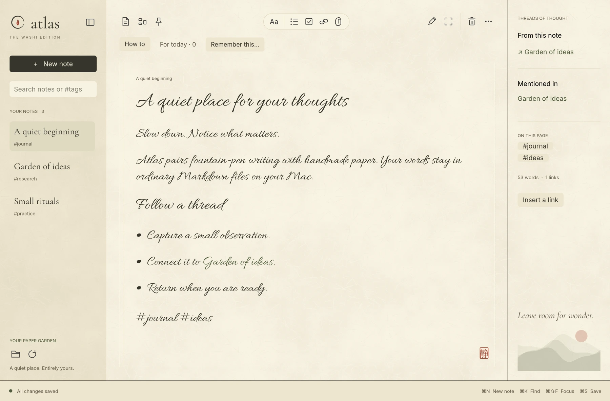
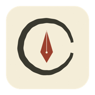

Enjoy the empty page.
Washi-inspired textures, fountain-pen lettering, and four paper palettes. Switch to typeset text or focus mode when that feels right.
The feeling of paper. The freedom of plain text.
Make room for the ideas, people, and little things
you want to come back to.
Free & open source · Local files · No account
A little less noise.
Slow down. Notice what matters.
A page that feels like paper. Notes saved as Markdown on your Mac.Washi-inspired textures, fountain-pen lettering, and four paper palettes. Switch to typeset text or focus mode when that feels right.
Link notes with [[wiki links]]. Pin them to a canvas, arrange your thoughts, and zoom out. The connections live in your Markdown, too.
Save a thought with its source, a person, and a review date. Return to it in a gentle review view. A little help remembering, on your terms.
Atlas saves ordinary Markdown files in a folder you choose. Open them in another editor. Back them up your way. Keep them long after the app is closed.
Explore the projectGood things grow
when we give them space.

MAKE A LITTLE ROOMStart with a blank page. See where it takes you.
Download Atlas for Mac .dmgv0.2.0 · Apple Silicon · macOS 12 or later
An early, open-source release. Locally signed; not yet Apple notarized.
Please read the installation notes below before opening.
Open the downloaded disk image, then drag Atlas into Applications. Launch Atlas from there and choose a folder for your notebook.
This early build is not signed with an Apple Developer ID or notarized. macOS may block the first launch. If you trust this release, follow Apple’s instructions to allow it in System Settings → Privacy & Security. Never turn off your Mac’s security protections.
This download is for Apple Silicon Macs (M1 and later), with macOS 12 or later. Intel, Windows, and Linux installers are not available in this release. Developers can find build instructions and current limitations on GitHub.
Into a local folder as plain .md files. Atlas requires no account or hosted notebook service. Canvas positions and preferences are saved separately; note links remain in the Markdown. Use your own backup or folder-sync tools if you want them.
For now, reminders appear when you open Atlas’s review view. You choose the context and review date. There are no background notifications, calendar connections, or AI inference in this release.
Atlas is an early prototype. Inline rich-text editing, full tables and math, and built-in image/PDF viewing are not yet available. External file changes refresh about every two seconds. Try it with a new notebook first and keep backups of important notes.
Absolutely. Atlas is built in Rust and released under the MIT license. Share feedback or report an issue, browse the code, or contribute a thoughtful improvement.